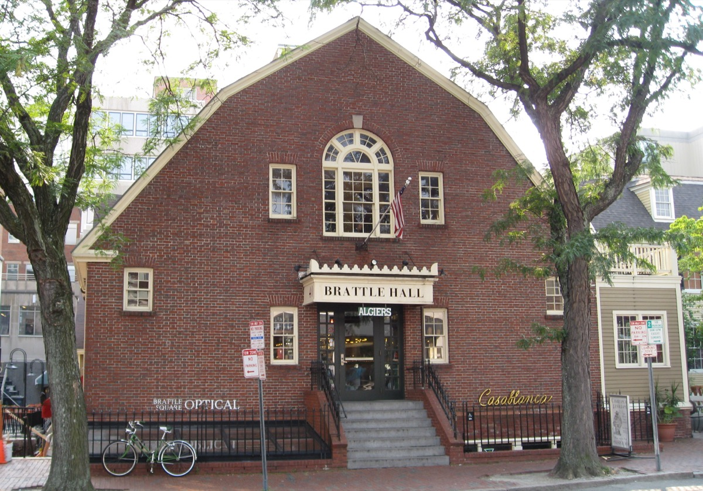

Boston is one of the easiest cities in the United States to enjoy alone. It is small enough to walk across in an afternoon, the subway runs until after midnight, the central neighborhoods are safe and busy in the evening, and roughly a quarter of a million students live in the metro area, so nobody looks twice at a person eating or walking by themselves.
This guide covers 25 things to do alone in Boston, organized by how you might actually spend a day: solo-friendly daytime activities, where to eat and drink by yourself, ways to meet people if you want company, what to do at night, and a one-day solo itinerary that strings the best of it together. Each entry has the address, the nearest T stop and a note on why it works alone.
The recommendations come from our own time living here and from what solo visitors tell us worked. Where a place is better with a group, we say so and leave it out.
The short answer
The 10 best things to do alone in Boston
- Read or work in Bates Hall at the Boston Public Library
- Walk the Freedom Trail at your own pace
- Eat a dozen oysters at the bar
- Walk the Harborwalk at dusk
- Visit the Isabella Stewart Gardner Museum
- Join a trivia team as a solo player
- Order off-menu at Drink in Fort Point
- Show up to a run club
- Catch a matinee at the Coolidge or the Brattle
- See live jazz at Wally's Café
01
Things to do alone in Boston during the day
These are the activities that are genuinely better solo: places that reward going at your own pace, sitting still, or wandering without a plan.
Read or work in Bates Hall

Bates Hall is the main reading room of the Boston Public Library: a 218-foot room with a barrel-vaulted ceiling, long oak tables and green-shaded lamps. Anyone can sit and read or work, no card required. It is quiet, beautiful and full of other people alone, which makes it the least self-conscious place in Boston to spend a solo afternoon. The courtyard café downstairs is good for a break.
Walk the Freedom Trail at your own pace

The Freedom Trail is a self-guided 2.5-mile walk past 16 historic sites, and it is better alone than with a tour group because you can linger where you want and skip what you don't. Most solo walkers take about 2 hours 40 minutes. The Granary Burying Ground, the Old North Church and Copp's Hill are the stops worth slowing down for. See the full route.
Visit the Isabella Stewart Gardner Museum on a weekday morning
The Gardner is a Venetian-style palace built around a four-story courtyard garden, arranged exactly as its founder left it in 1924. The empty frames from the 1990 theft are still on the walls. It is a museum that rewards standing still, and weekday mornings right at opening are nearly empty. Thursday evenings are the busiest and most social.
Walk the Harborwalk from the Seaport to the North End

This stretch of the public Harborwalk runs past Fan Pier, over the Seaport Boulevard bridge, around Long Wharf and the Aquarium, and ends at Christopher Columbus Park at the edge of the North End. It is the best solo walk in the city, and the best time is the hour before sunset. It also ends in the best neighborhood in the city for a solo dinner.
Get lost in the Arnold Arboretum

The Arboretum is 281 acres of Harvard's tree collection, free and open every day. It is big enough to wander for two hours without seeing the same path twice, and Peters Hill at the south end has a skyline view. Jamaica Plain's Centre Street, a ten-minute walk away, is good for a solo lunch afterward.
A weekday matinee at the Coolidge Corner Theatre or the Brattle

Two of the best independent cinemas in the country are on the Green and Red Lines. The Coolidge is an art deco theater from 1933 with first-run indie films and midnight cult screenings; the Brattle in Harvard Square runs repertory double features. A 2pm weekday screening alone is one of the underrated pleasures of living in Boston.
Browse Harvard Square's bookstores
Harvard Square still has more independent bookstores within a few blocks than almost anywhere in the US: the Harvard Book Store, the Grolier Poetry Book Shop, the Harvard Coop and Raven Used Books. Browsing alone for an hour and then sitting on the Widener Library steps is a complete afternoon.
02
Where to eat and drink alone in Boston
The rule for eating alone in Boston is simple: if a restaurant has a bar or a counter, sit at it. The bartender becomes your host, service is faster, and you are never "the table for one." These are the places where that works best.
A dozen oysters at the bar
Oysters are the perfect solo food: nothing to share, no negotiating the menu, and a shucker across the counter to talk to. Neptune Oyster in the North End is tiny, doesn't take reservations, and seats single diners far faster than groups. Row 34 in Fort Point has a long bar and a good beer list; B&G in the South End is the quietest of the three. See our oyster bar ranking.
Lunch at a counter: Sam LaGrassa's or Galleria Umberto
Two of Boston's best lunches are counter-service, cash-friendly and full of people eating alone on a break. Sam LaGrassa's Downtown does the city's best pastrami sandwich and closes at 3:30pm. Galleria Umberto in the North End sells Sicilian slices and arancini until they run out, usually by 1:30pm.
A cocktail at Drink, Fort Point
Drink has no cocktail menu. You describe what you like and the bartender makes something. That format is the most solo-friendly bar experience in Boston because a conversation is built into ordering. Go early on a weeknight; the line gets long after 8pm on weekends.
A ramen counter in Chinatown or Porter Square

Ramen and noodle shops are designed for solo eating. Yume Wo Katare in Porter Square is a single communal counter where you order one thing, eat it, and are encouraged to announce a dream on the way out. Gene's in Chinatown does hand-pulled Xi'an noodles for under $12 and is open late.
A café to work from
Solo days need a base. Render in the South End has good WiFi and long-stay tolerance; Tatte is better for pastry and people-watching than laptops; Pavement is the reliable chain on nearly every campus. Full list in the best cafés to work from in Boston.
One beer at the Bell in Hand or the Warren Tavern
The Bell in Hand (1795) and the Warren Tavern (1780) both claim to be the oldest tavern in America. Both are on the Freedom Trail, both have bars where a single drinker is normal, and both are a good place to end the walk. Go mid-afternoon, before the tour groups.
03
How to meet people in Boston when you're on your own
Being alone in Boston is easy. Not staying alone takes a little more intention. These are the activities where talking to strangers is the point, so showing up solo is expected rather than awkward.
Join a trivia team as a solo player
Pub trivia runs almost every weeknight across Boston, Cambridge and Somerville, and it is the single most reliable way to meet people alone. Arrive, tell the host you're solo, and you will be placed on a team. Most teams are happy for the help. Our trivia guide lists nights by neighborhood.
Show up to a run club
Boston is a running city, and its run clubs are free, weekly and built for newcomers. November Project's Wednesday stadium workout has been welcoming strangers since 2011. Heartbreak Hill Running Company runs from its Newton and South End stores. Conversation starts on its own around mile two.
Free Thursday night at the ICA

The ICA's free Thursday evening is the closest thing Boston has to a weekly social night for people in their twenties and thirties. In summer the harbor deck is open, there is often music, and it is normal to go alone. The bars on Seaport Boulevard are a short walk after.
Pickup sports on the Common and the Esplanade
On summer evenings there is usually a pickup soccer, basketball or volleyball game going on the Common or the Esplanade. Stand near the edge and look interested. Someone will ask if you want in.
Language exchanges and meetup groups
Boston has a large international student population, and language exchange nights happen weekly in cafés around Harvard Square, Kendall and Back Bay. They are explicitly for meeting strangers, so arriving alone is the norm. Board game nights at Knight Moves in Brookline and the Cambridge Public Library work the same way.
The longer answer is in how to make friends in Boston.
04
Things to do alone in Boston at night
Live jazz at Wally's Café

Wally's has been a jazz club since 1947 and is one of the oldest continuously running in the country. It is a single narrow room, standing room at the back, with student and professional musicians every night. It is one of the few places in Boston where being alone at 11pm makes you look like a regular.
Longfellow Bridge after dark

Walk from Charles/MGH station across to Kendall and back. The Back Bay skyline is reflected in the river, Red Line trains pass next to you, and there are always other people on the bridge. About 15 minutes round trip.
Late-night noodles in Chinatown

Chinatown is the neighborhood that eats late. Gene's and Dumpling House are open past midnight, have counter seats, and are full of people who also didn't plan dinner. No small talk required.
The Seaport waterfront at midnight
After the restaurants close, the Harborwalk by Fan Pier is empty, lit and safe, with the full Downtown skyline across the water. It is the best solo view of the city at night and a short walk from South Station.
A show at the Sinclair or Brighton Music Hall
Mid-size venues are the easiest concerts to attend alone: general admission, standing, and dark. The Sinclair in Harvard Square and Brighton Music Hall in Allston both book touring indie acts most nights of the week.
More in things to do in Boston at night.
05
A one-day solo itinerary for Boston
If you have a single day alone in Boston and want to do it well, this is the route. It is about six miles of walking with two T rides, and it costs under $40 including lunch and a drink.
| Time | What | Where |
|---|---|---|
| 8:30am | Coffee and a pastry, then start the Freedom Trail | Boston Common, Park Street |
| 9:00am | Freedom Trail through Downtown to the North End | Granary, Old State House, Faneuil Hall |
| 11:30am | Old North Church and Copp's Hill; early lunch at Galleria Umberto before it sells out | North End |
| 1:00pm | Walk the Harborwalk south to the Seaport | Christopher Columbus Park to the ICA |
| 2:00pm | ICA (free if Thursday), or the Boston Public Library via the Green Line | Seaport or Copley |
| 4:30pm | Read or rest in Bates Hall, or the Public Garden | Back Bay |
| 6:00pm | Sunset on the Esplanade | Hatch Shell dock |
| 7:30pm | Oysters and a drink at the bar | Neptune, Row 34 or B&G |
| 9:30pm | Trivia, Wally's, or the Longfellow Bridge walk home | Your call |
For a longer stay, the Boston solo travel guide has three-day and weekend versions.
06
Is Boston safe to explore alone? Practical tips
Boston is one of the safer large cities in the US for solo visitors, and the neighborhoods in this guide are busy and well lit into the evening. The central areas, including Back Bay, Beacon Hill, Downtown, the North End, the Seaport, Cambridge and Somerville, are comfortable to walk alone at night. Use ordinary city judgment: stay on main streets after 1am, and be aware that the Common and the Esplanade get quiet late.
The T stops running around 12:30am, with last trains varying by line, so check the MBTA app if you are out late. Rideshares are easy to get in the central neighborhoods. Most of this list is walkable from Downtown, and walking is often faster than the T for trips under a mile and a half.
Practical notes: many North End restaurants are cash only; the MFA, Gardner and ICA all have lockers for bags; and Boston's weather changes fast, so a layer in your bag is a good idea in every season. Solo women travelers can find more specific advice in our Boston solo female travel guide.
FAQ
Things to do alone in Boston: common questions
Is Boston a good city to visit alone?
Yes. Boston is compact and walkable, has reliable transit, is safe in the central neighborhoods at night, and has a large population of students and young professionals. Being out alone is normal here.
Is it weird to eat alone in Boston?
No. Most good restaurants have bar seating, and oyster bars, ramen counters, lunch counters and cafés are built for solo diners. Sitting at the bar is the easiest way to eat alone anywhere in the city.
Is Boston safe to walk alone at night?
The central neighborhoods are busy and well lit late. Use normal judgment, stay on main streets after 1am, and note that the T stops around 12:30am.
How do I meet people in Boston if I'm alone?
Go where talking to strangers is the point: trivia nights, run clubs, pickup sports, free museum nights at the ICA, and language exchange or board game nights where arriving alone is expected.
What is there to do alone in Boston on a rainy day?
The Boston Public Library, the Gardner, the MFA, the ICA, a matinee at the Coolidge, the bookstores of Harvard Square, and a long lunch at a counter. See things to do in Boston when it rains.
How many days do you need in Boston alone?
Two full days covers the essentials: the Freedom Trail, one or two museums, the waterfront and a couple of neighborhoods. Three days lets you add Cambridge and a day trip to Salem or the Harbor Islands.